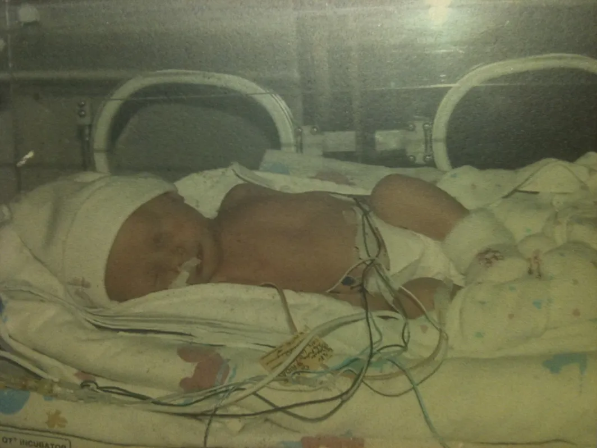

The Child Made of Glass
Food Allergy Awareness
Before I knew how to spell my own name, I knew how to say, "Does this have nuts in it?"
My Name is Madelyn Mauceli, and I was born a child made of glass. I always knew that growing up different from others was going to be a struggle, so let me tell you about my experiences with food fear.

My childhood wasn’t measured in years. It was measured in labels, ingredients, and questions.

When I was born, my mother was my lifesaver in so many ways. I was born 5 weeks premature via c-section on June 3rd, 2003. My mom knew something was wrong once she didn't feel me slingshotting my foot straight into her ribs that morning, so she rushed straight to the hospital and had me that day. The Doctors told her she saved me that day.
My mom read labels like they were life or death.
Because sometimes they were.
When I was little, every grocery store trip was careful and slow. My mom would stand in the aisle reading ingredient lists, turning boxes over one by one.
I didn’t understand why other kids could grab anything they wanted.
Go to school with me →
Food wasn't just food. It was risk.
Birthday parties were confusing. Everyone else ate cake without thinking.
I had to ask questions first.
Sometimes the answer was no.